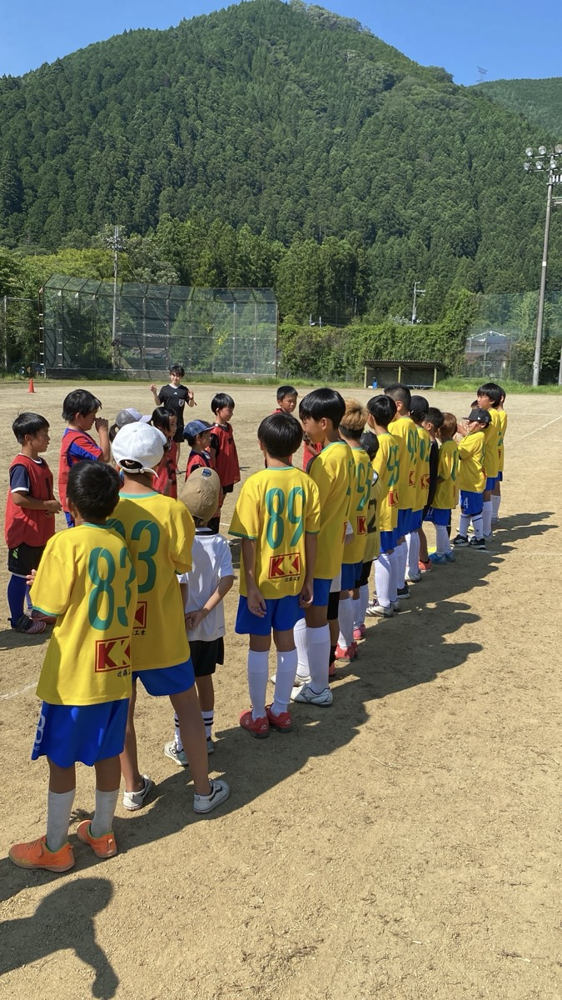
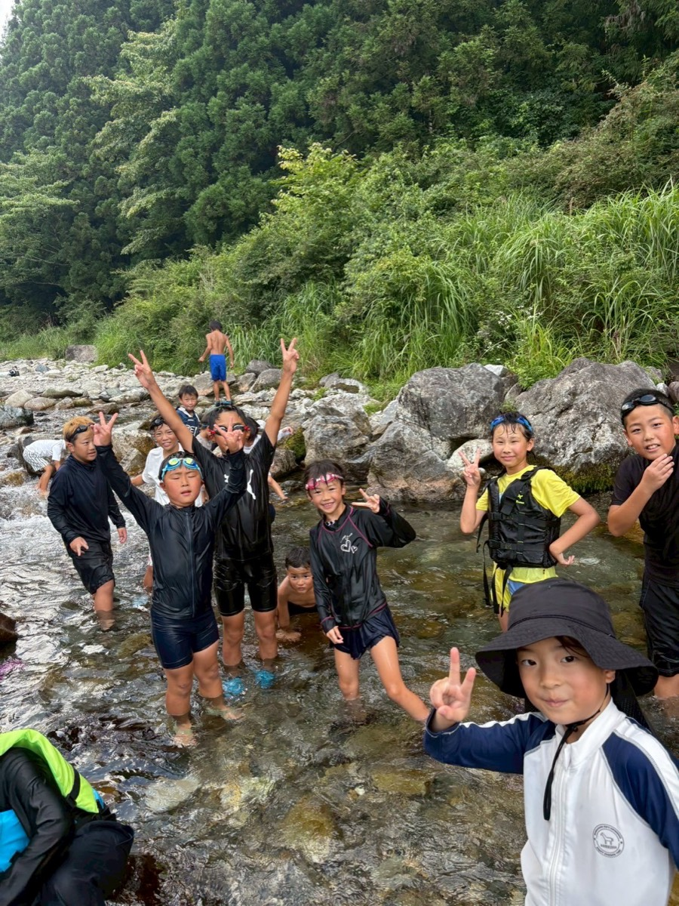
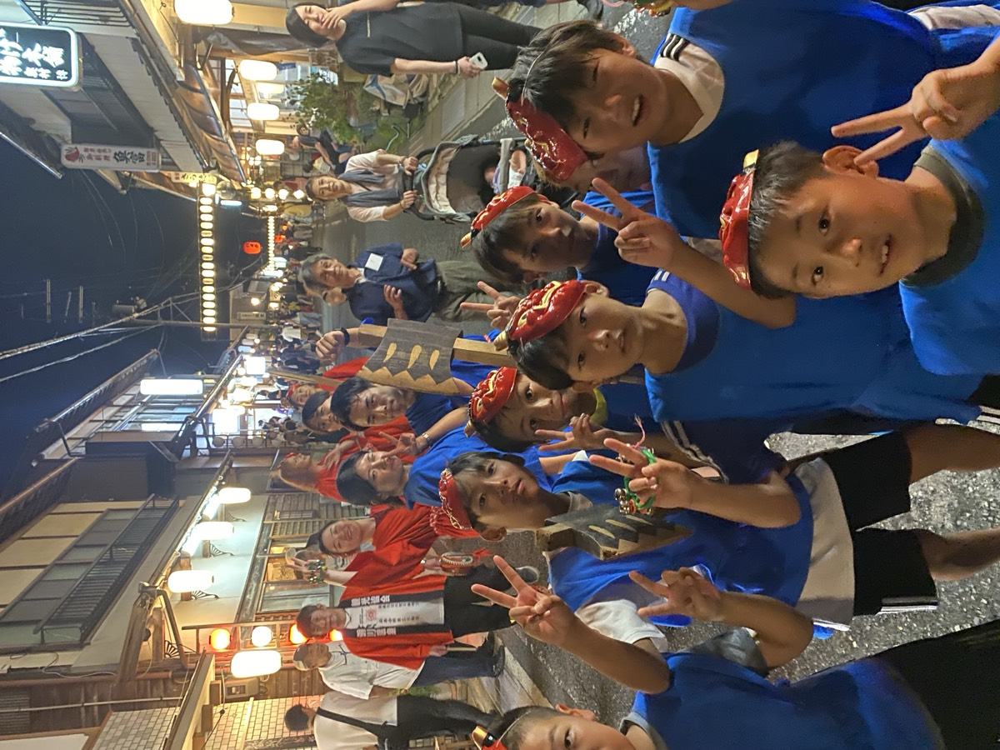
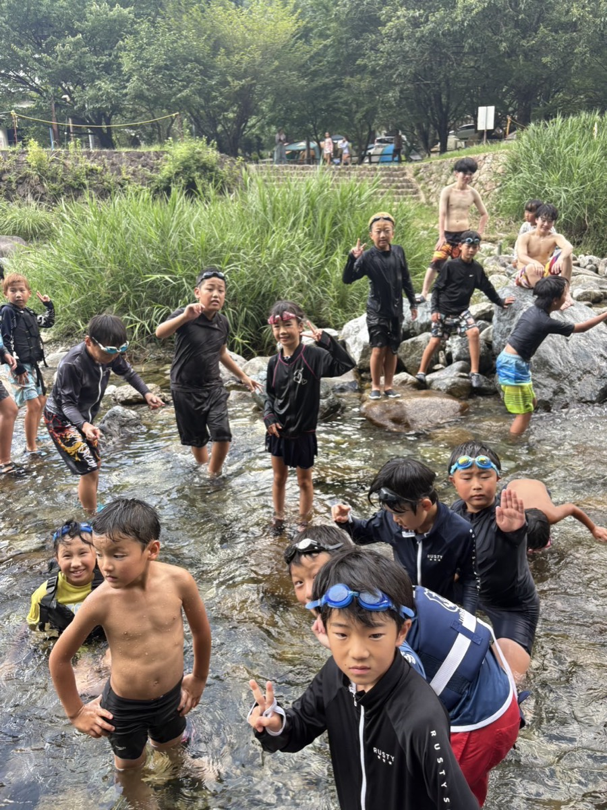
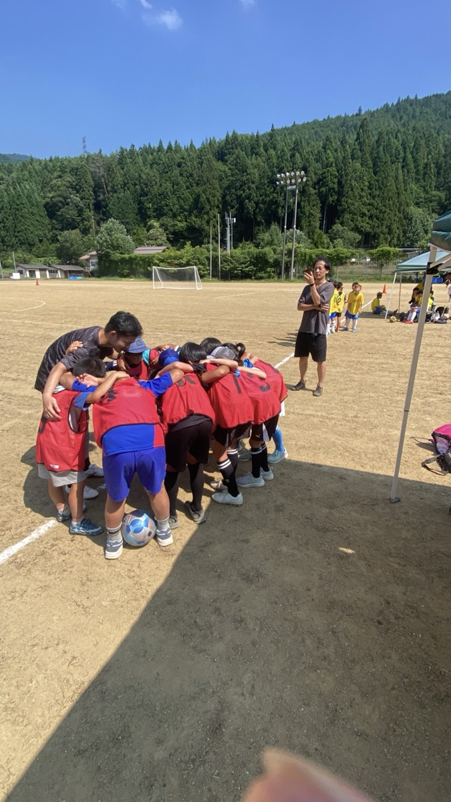
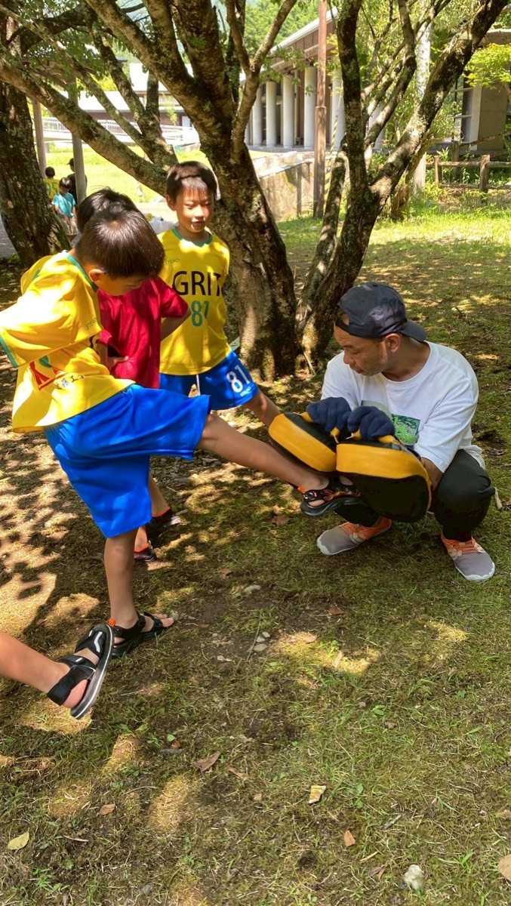
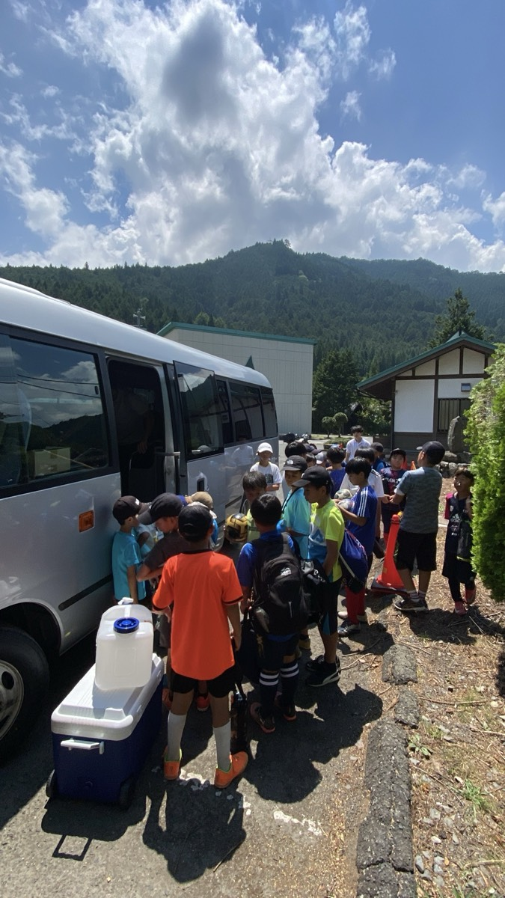
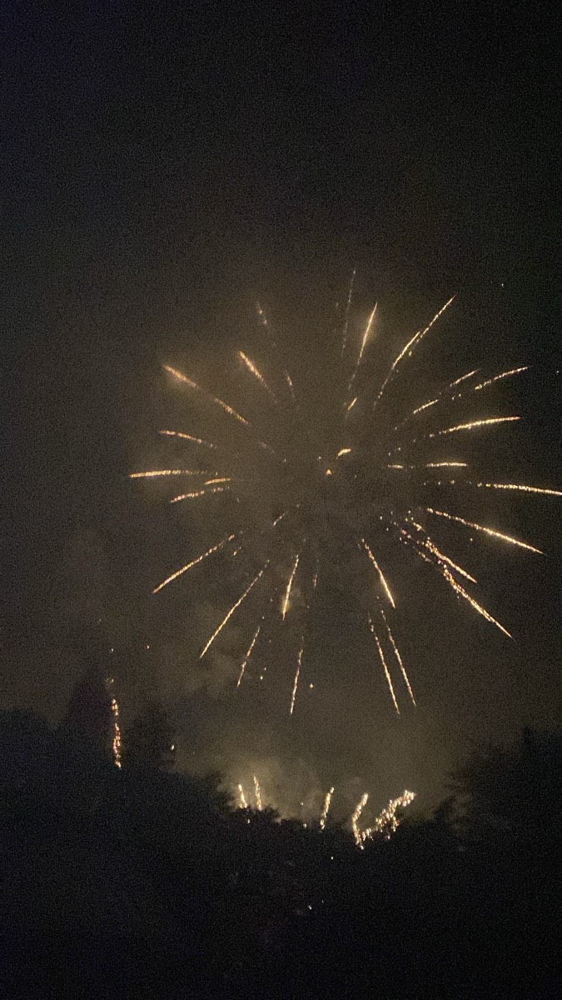
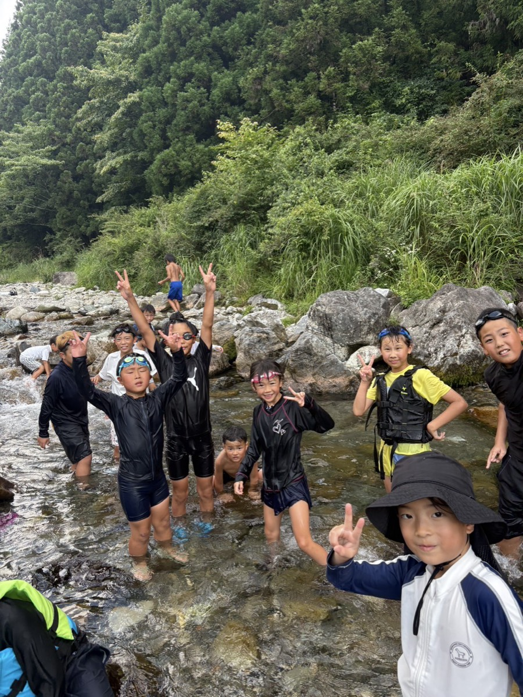

OVERVIEW
2025年8月、天川村で初めての本格的なサマーキャンプを実施した。 大阪府の少年サッカーチーム21名と天川村内の児童8名が集まり、 1泊2日の自然体験・スポーツ交流・地域文化プログラムを行った。
保護者が同行しない環境の中で、子どもたちが仲間と協力し、 自然体験・スポーツ交流・地域文化行事への参加を通じて 成長と自己発見の機会を得ることを目指した。



PROGRAM
- 午前 サッカー交流①（高学年が低学年を指導する活動）
- 午後 洞川キャンプ場にてテント設営 / 川遊び・餅まき / 夕食（前田宅にて提供）
- 夜 行者まつり参加（鬼踊り・ひょっとこ踊り）/ 花火鑑賞・焚き火・語り場
- 午前 起床・朝食 / クリーンキャンペーン（洞川地区での地域清掃）
- 昼前 魚つかみ取り体験 / レインボーガーネット（宝石探し）体験 / 昼食（川魚・おにぎり）
- 午後 サッカー交流②（天川村児童 × 大阪チーム ごちゃ混ぜ交流戦）/ クロージング・ふりかえり


VOICES
参加した子どもたち・保護者・ボランティアスタッフから届いた声。
「川がこわかったけど、最後は楽しかった」
小6「大阪の子とサッカーできてうれしい」
小1「鬼踊りを一緒に踊れて楽しかった」
小3「星がきれいで、また来たい」
小5「普段見られない子どもの成長が見られた」
保護者「親がいない環境で過ごす経験が貴重。ぜひ継続してほしい」
保護者「異年齢の関わりが自然に生まれ、学びが深かった」
ボランティアスタッフ「大人が"教える側"ではなく"伴走者"になれる場だった」
ボランティアスタッフPHOTOS






MEDIA
NEXT
2025年11月、宝塚青年会議所（JC）の代表者2名が天川村へ視察来村。 2026年度からの本格参加が内定した。
2026年度は、年間3回開催へ。
サマーキャンプ（宝塚JC × 天川村）・サッカー合宿・防災体験の3本柱で、 天川村が持つ教育・文化資源を活かした 「教育×地域×自然」の新しいモデルを構築していきます。 地域おこし協力隊の正式事業として位置づけ、 安全性・教育性を高め、村内外の子どもたちに継続的な体験を届けます。